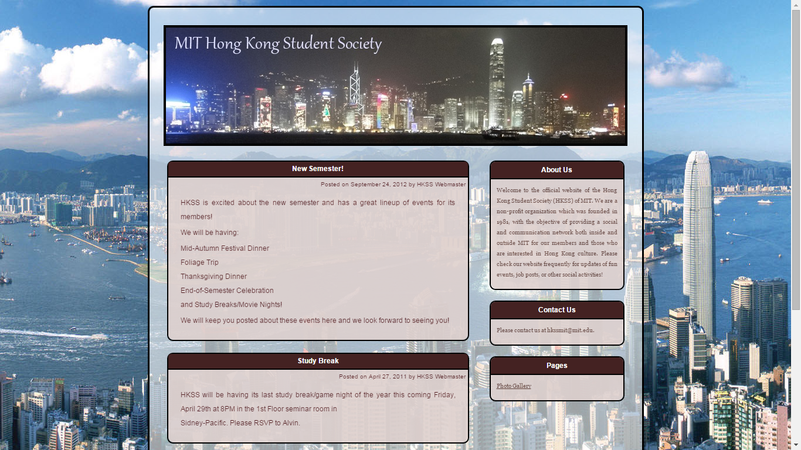

From an Outdated Blog to a Remastered Website
By Lawrence LaiAs of my new takeover of the president position, I see many flaws in HKSS that need to be answered. More of these problems can be found in the New Officers article .
I believe though, that the root cause of all the problems listed stem from one basic problem, and that is the lack of publicity. New students are not able to find us because there is virtually no way to know of us unless they find our website, or if they happen to stumble upon us. Since the latter of the two methodologies takes on a much lower possibility, the Website is definitely the best way to get our name out there, and subsequently snowball our success into better quality events and more funding.
I belonged to one of those who looked for the HKSS website as I joined MIT. Although I did e-mail the officers through the address listed on the old site, I for one wasn't very fond of how it looked, and had doubts whether if the group was still in an active state. Below is a screenshot of how it used to look.
The most fatal flaw was the extremely outdated post in the very top of the page, dated back in September of 2012 (I joined MIT in 2013, and the website was rennovated at October 13, 2015). It was a whopping three years ever since the last official note was posted
To make matters worse, the posts on this website were not well maintained even during its active period. We could see that the two top posts were five months apart, and that calls for a Webmaster position for HKSS.
And the list goes on. The page itself lacks the professionalism that I feel our organization is entitled to; not to mention that the webpage was a webpage, as in there are no links that lead to any other related directories, i.e. it wasn't really technically a website.
While I do appreciate the photo gallery link, which links to various albums posted by HKSS members on Picasa, the website's awful attributes pushed me over the edge, and that was the start of an arduous journey of the creatio of this website
It certainly was not to my advantage that I had no experience or knowledge past my middle school with website creation. And those were the times they taught us that a webpage always starts and ends with html tags (and nothing beyond that). Even worse, the WordPress authorization was registered towards an individual's mit.edu e-mail who used to belong to HKSS that no longer has his address (on the bright side I will not have to second guess myself for starting in a clean slate).
It was times like this that a little bit of engineering knowledge could carry our organization through hard times.
The basis of this Website creation was full of experiments, and hypotheses. The first question that ever had to be answered was which directory holds the website information; mind you it wasn't exactly obvious to an oblivious Chemical Engineer like me. I tried searching our web locker for .html files and opened every single one of them, finding that none of them resemble our old website. After a couple of hours of investigation, I played it dangerous with my hypothesis testing; I backed up all files on the web locker onto my own computer, and started deleting directories one at a time, until I find a dysfunctional website.
By doing this I've located a directory full of php files. It appears that since the last iteration of our website ran off WordPress, it employs script file formats (.php formats, that is; don't ask me why, I've said a few times by now I am absolutely clueless in web development).
Everything onwards was easier than this first step. Using friendly advice from my colleague Connie Gao, I've found templates through Google search, and molded HKSS' themes towards a professional looking template (shoutouts to Escarine-Biz at templates-OS). That is how this website was created; nothing but an abomination of trial and error on a website template.
As much as the creation process was an abomination, however, HKSS now has an elegant looking site that brings us publicity (only if I hadn't ruined all of it in this article). Regardless, I find it imperative to ammend our constitution to enlist a webdeveloper to part of our coordinating committee.